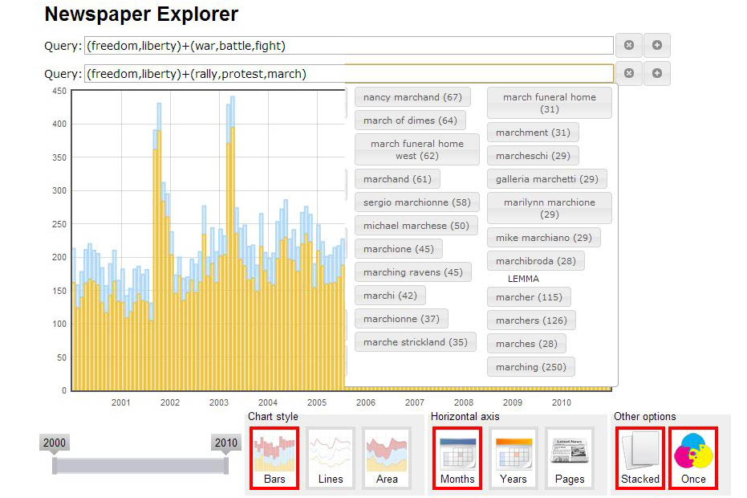

Text Visualization of Historical Newspapers
David Chanin, Ian Christopher, Mircea Bobby Georgescu, T.J. Purtell
|
Newspaper archives are a treasure trove of historical information but their sheer volume presents problems for journalists and social scientists trying to understand macroscopic trends.
These visualizations allow for the exploration of news topics over a decade of news from the Chicago Tribune, Baltimore Sun, and LA Times.
|
|
|
Sparc Entity Explorer 
|
Newspaper Explorer (iOS5 iPad Friendly) 
|
Experimental |
|
|
Multi-term Plotter 
|
Advanced Newspaper Explorer (Text Query Expressions)  |
Thanks to Geoff McGhee and Proquest for the data.